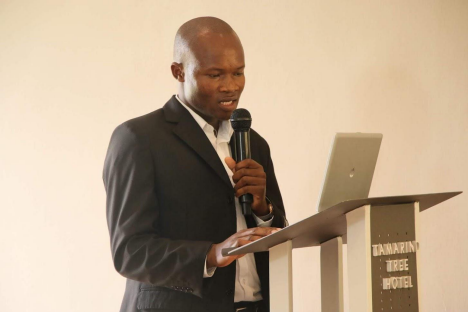
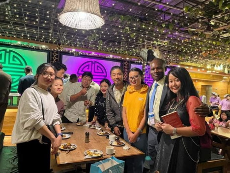
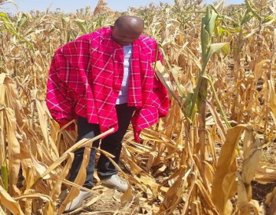
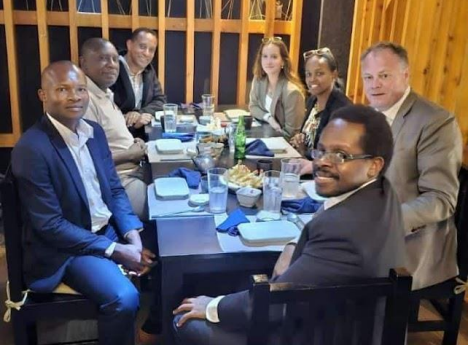
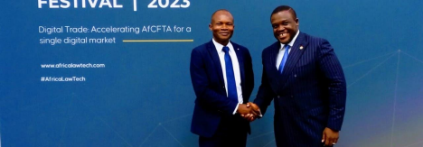

I hold a Bachelor of Science in Chemistry from Masinde Muliro University of Science and Technology and a Bachelor of Business Administration (BBA) from Nexford University in Washington, DC, USA. Additionally, I have completed Essentials in Information Technology at the CISCO Academy and received training in Project Management from JKUAT School of Business. Furthermore, I pursued a Bachelor's degree in International Relations and Diplomacy at the University of Chicago in the USA. These diverse educational experiences have equipped me with a broad skill set, combining scientific knowledge, business acumen, IT essentials, project management expertise, and a deep understanding of international relations.

Empowering Youth Futures: Mentorship Programs with the Empowered Youth Coalition

Embarking on a transformative journey, I lead mentorship programs under the Empowered Youth Coalition, aiming to sculpt the leaders of tomorrow. Through personalized guidance and empowering initiatives, we foster a dynamic environment for young minds to thrive, ensuring they emerge as influential contributors to society.
CULTIVATING PROSPERITY: INITIATING HOLISTIC AGRICULTURAL DEVELOPMENT PROGRAMS FOR SUSTAINABLE GROWTH

At the intersection of sustainability and prosperity, our transformative agricultural projects thrive. From innovative crop cultivation to ethical animal farming practices, we're cultivating a future where agriculture becomes a cornerstone of community development, ensuring both food security and sustainable economic growth.
CHAMPIONING YOUTH RIGHTS: GLOBAL POLICY ADVOCACY WITH UN FAMILY RIGHTS CAUCUS

In the realm of international diplomacy, I proudly represent the UN Family Rights Caucus as the Youth Policy Representative for the Africa Region. Collaborating with esteemed organizations such as Family Watch International and Africa Christian Professionals Forum, our initiatives transcend borders, advocating for the rights of the youth at the United Nations, African Union, and European Union.
Elevating Skills and Knowledge: Comprehensive Training and Educational Programs

Navigating the dynamic landscape of education, I take pride in spearheading comprehensive training and educational programs that transcend traditional boundaries. Our initiatives meticulously focus on honing essential skills, fostering innovation, and empowering individuals with the knowledge needed to not only excel but also to thrive in their respective fields, thereby contributing to a brighter and more dynamic future.
HEARTFELT INITIATIVES: PIONEERING WELFARE AND CHARITY PROGRAMS FOR COMMUNITY UPLIFTMENT
Guided by a profound commitment to community welfare, I lead impactful initiatives that extend a helping hand to those in need. Through charitable programs, we aim to create a ripple effect of positive change, uplifting communities and fostering a spirit of solidarity.
STRATEGIC BUSINESS BRILLIANCE: ENHANCING CONSULTANCY FOR OPTIMAL ORGANIZATIONAL GROWTH

In the dynamic business world, my strategic brilliance enhances operational efficiency, ensuring sustainable success. I guide organizations, facilitating goal achievement through innovative and meticulous strategies.